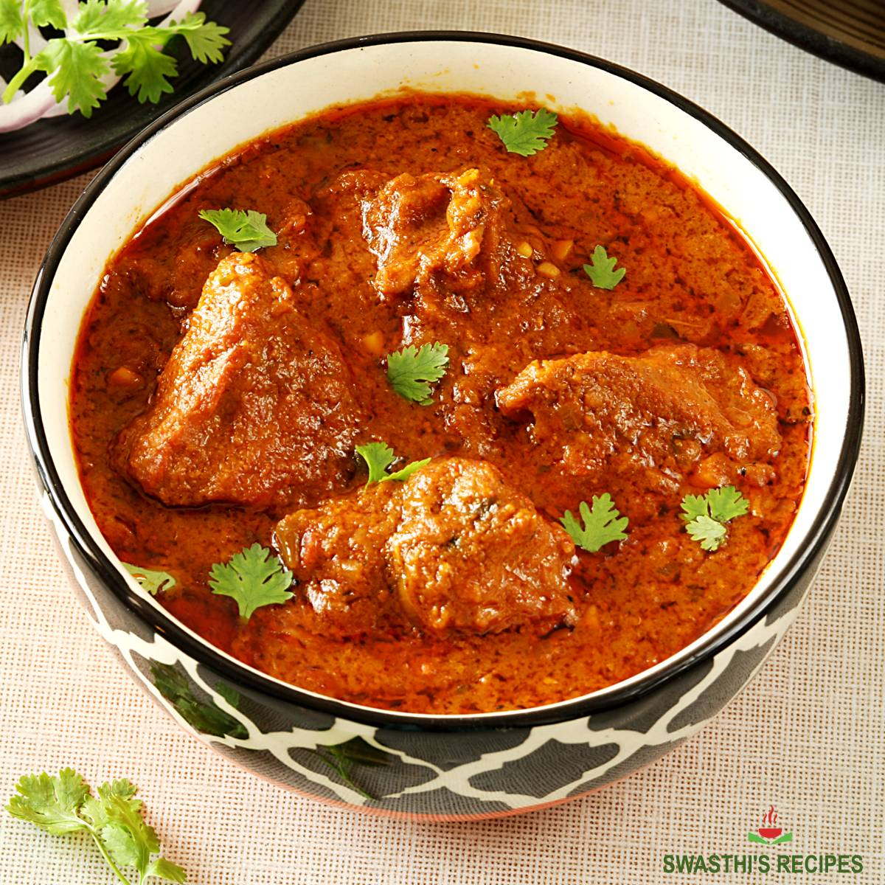

Succulent Lamb Curry Recipe

Ingredients
- Lamb (trimmed & skinless)
- Whole Spices - Bay leaf, dried chilies, Cinnamon stick, Mace, Cumin, Black cardamom, Cloves.
- Powdered Spices - Coriander, Red Chili, Turmeric, Kashmiri red chilli (or paprika) and garam masala
- Yogurt- We need whole milk plain yogurt. Greek yogurt or hung curd is fine too.
- Onions - You can use any kind of onions at home- red, white or yellow.
- Ginger & Garlic - Simply mince together equal parts of fresh peeled ginger and garlic in a small blender or mortar pestle.
- Tomato - We dont need a lot, just one for a little acidic sweetness of tomatoes.
- Oil
- Ghee
Instructions
- For cooking lamb on stove top, a wide mouthed dutch oven or any heavy pot (with lid) is the best utensil to cook.
- Set the pot on stove and add oil. Once the oil is warm, add all the whole spices (except cumin) and saute for 10-20 seconds.
- Add the onions next and brown the onions. This process takes anywhere between 8 to 12 minutes.
- Add 2-4 tablespoon water to the browned onion. Add the cumin seeds and ginger & garlic. Stir for 10-15 seconds.
- Add the lamb to the pot. Sprinkle some salt. Mix with the onions and then let cook for 4-6 minutes until the lamb is not pink.
- Add the powdered spices next and stir around so that the spices coat the lamb.
- Slice the tomato in half and add on top of the lamb. Cover the pot for 15 minutes. After about 12 minutes, open the lid and using tongs peel off the skin of the tomatoes. Tomatoes will be soft, smush them and mix. (You can chop the tomatoes if you wish)
- Now, add 1 to 1.5 cup of water and cover the pot again for about 1 to 1.25 hours or so and let simmer. You will need to keep an eye and stir frequently.
- Once the lamb is quite tender (95 percent cooked), add the whisked yogurt and garam masala.Mix well.
- Cover and let cook for 8-10 minutes more until lamb is fork tender. Finish with ghee and chopped cilantro